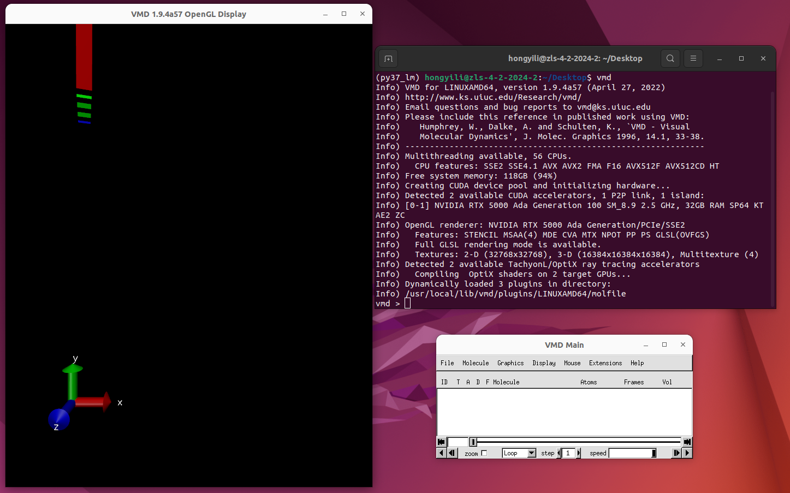
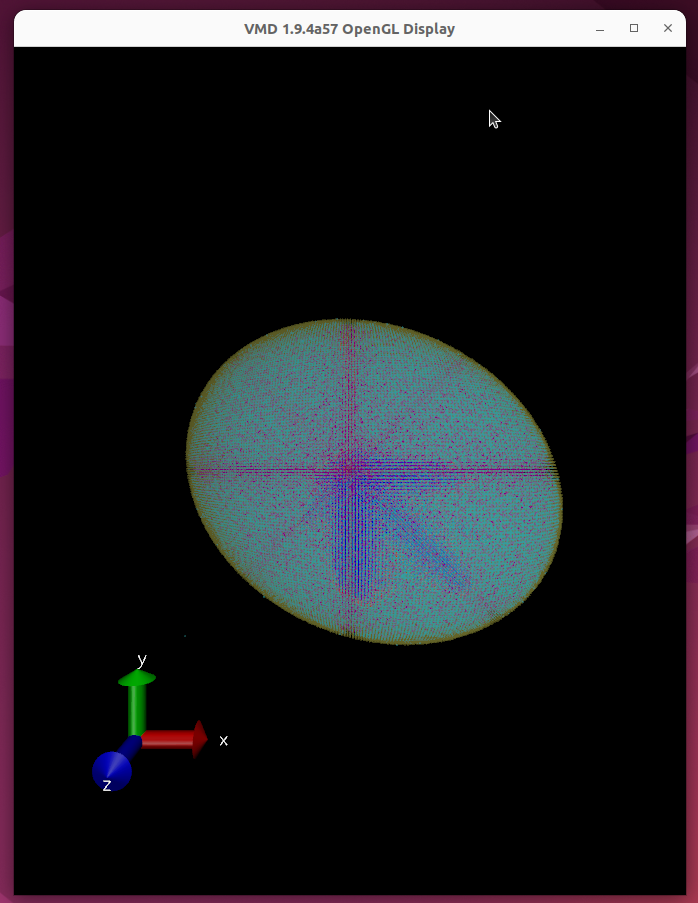
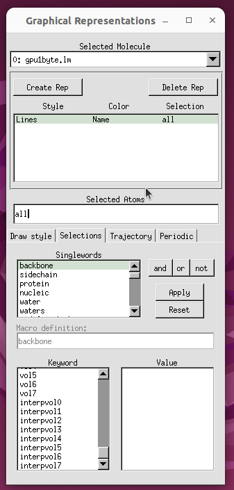
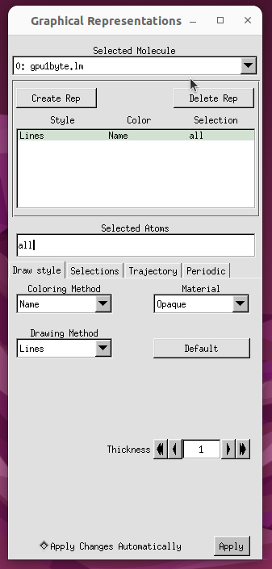

Visualization using VMD#
Visual Molecular Dynamics can be used to visualize RDME simulation output. If LM was built and installed with VMD support, the required molfile plugin to load LM trajectories will be installed automatically. VMD has excellent documentation, so only LM specific features of the plugin will be discussed here.
As noted in the Installation section, LM needs to be built, installed and run inside a conda environment, which is created by a .yml file in Lattice-Microbes/conda_envs. Suppose we’ve used Lattice-Microbes/conda_envs/lm_precomp.yml to create a conda environment py37_lm. We can then type the two lines below to launch VMD:
conda activate py37_lm
vmd
Upon a successful launch, we should be able to get the windows in the picture below. The window on the left is the display window, where our simulation trajectory visualization eventually shows up. The window on the bottom right is the control window, where we can load trajectory files and adjust visualization properties.
{kind=link}
Assume we have an RDME simulation output file gpu1byte.lm. To load it, we can click the File dropdown and select New Molecule… in the control window, as shown below.

A Molecule File Browser window shown below will pop up, and we should select Browse…. In the pop-up window on the right, we can then navigate to gpu1byte.lm and click OK. Finally, we should click Load in the Molecule File Browser window on the left.

Upon a successful load, we should be able to see the cell in the display window shown below.
{kind=link}
To adjust visualization parameters, we can select Representations… in the Graphics dropdown of the control window.

In the pop-up window, we can first go to the Selections tab, select the type of molecules we want to see from the Singlewords menu, and then click Apply.
{kind=link}
We can then go to the Draw style tab, select our desired Coloring Method and Drawing Method, and click Apply at the bottom.
{kind=link}
We can also adjust the orientations of the axes in the display window, by going to Axes in the Display dropdown of the control window.

If we want to change the location of axes and thus choose UpperLeft, the display window will look like below: